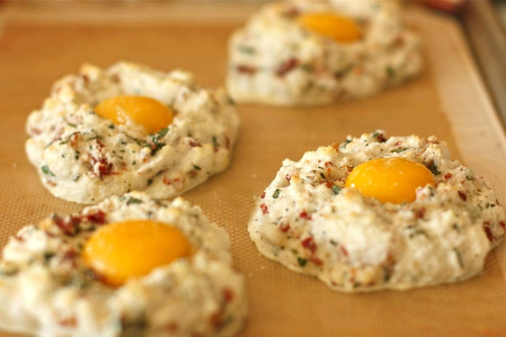

cloud eggs
Home
Cloud eggs or eggs nests, whatever you call them, they are a delightful way to prepare eggs. You basically whip up the egg whites, form cloud or nest shapes with the whipped egg whites, and plop the egg yolk in the center, and bake. Oh yes, and some grated cheese is folded into the whipped egg whites. More cheesy structure for the nest.

Ingredients
4 large eggs separated
1/4 tbspn Italian seasoning
1/4 tbspn salt and pepper
1/4 cup shredded Parmesan cheese
1 tbspn fresh basil
1 tbspn oil
Nutrition Facts
Energy 70j
Total Fat 5.0g
Cholestero 185mg
Sodium 70mg
Total Carbohydrate 0.0g
Vitamin D 1mcg
vitamin A 0%
Procedure
Preheat over to 450 degrees.
Separate eggs, place whites in a large bowl and yolks in 4 separate small bowls.
Beat egg whites with Italian seasoning, salt and pepper unitl still peaks form.
In an oven safe pan coated with cooking spray, drop egg white mixture in 4 mounds. With the back of a spoon, create a small well in the center of each mound.
Sprinkle with cheese. Bake until light brown, about 5 minutes. Pull from oven and then gently slip egg yolk into each of the mounds.
Bake until yolks are set abpit 3 - 5 minutes. Sprinkle with basil and tomoatoes. Serve with a glass of Arrossire di Barbera!
Expert Guide
Back ←
Scroll to Top ↑